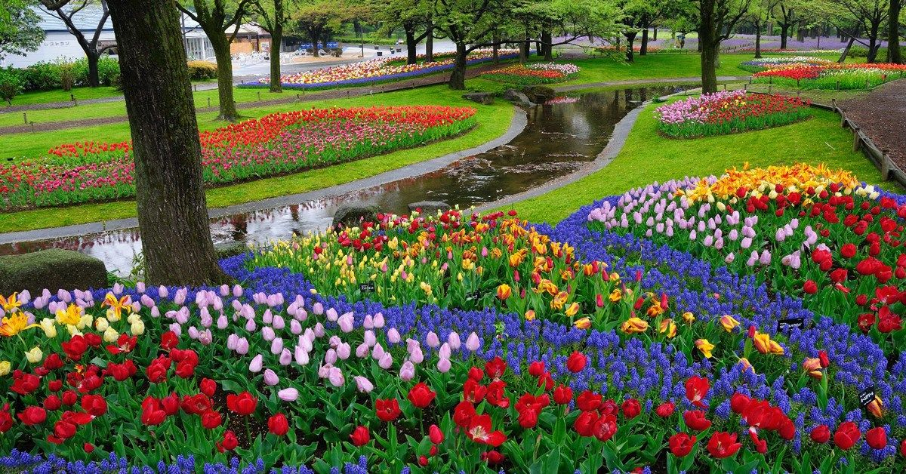
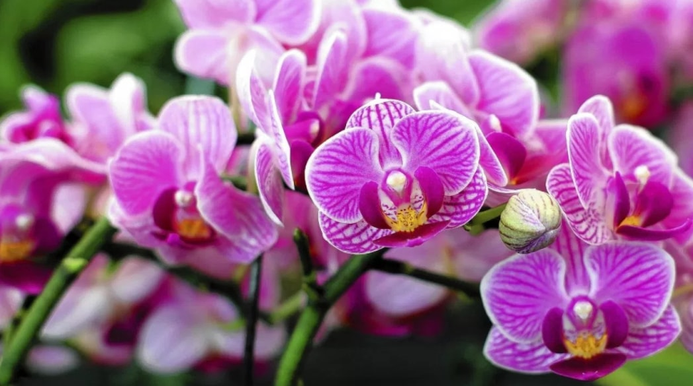
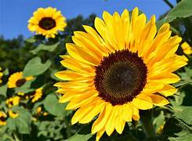
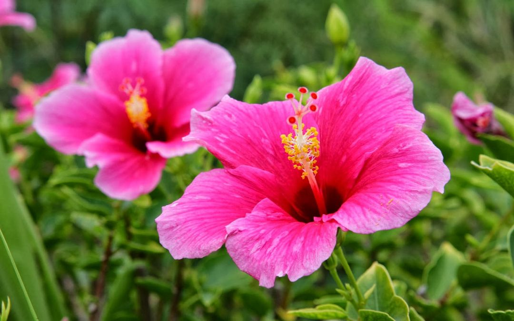
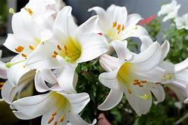
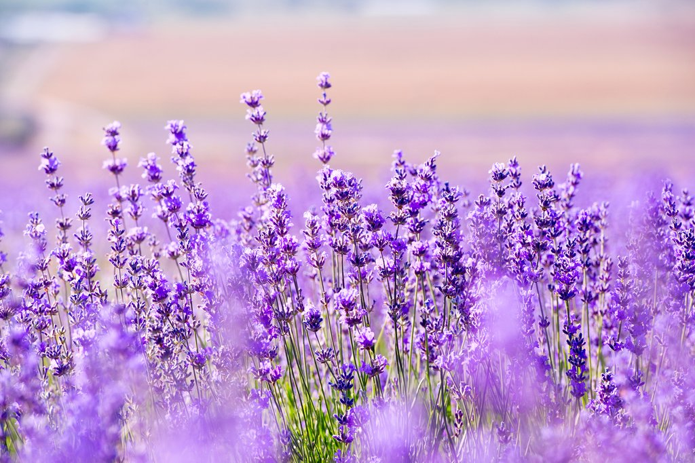
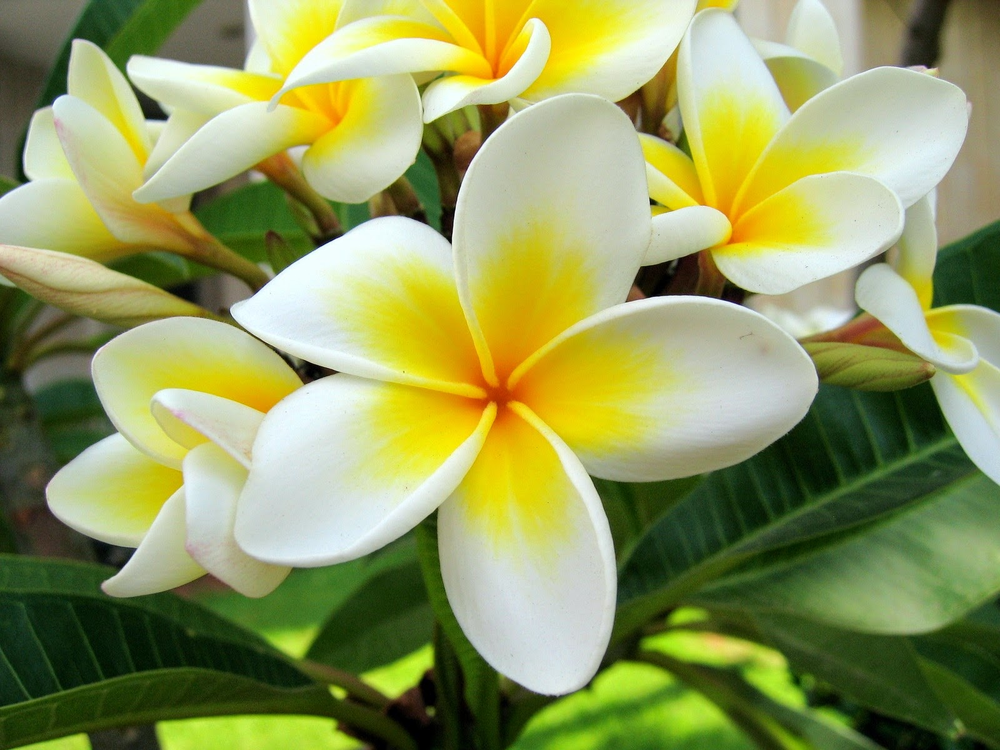

Keajaiban Taman Flora
Di sini, Anda dapat menemukan berbagai jenis flora yang memukau.
Galeri Flora
Mawar
Bunga Mawar adalah simbol cinta yang abadi.
Anggrek
Keindahan eksotis dari bunga Anggrek memikat hati siapa saja.
Tulip
Tulip merupakan simbol musim semi yang segar dan penuh warna.
Matahari
Bunga Matahari melambangkan energi dan kebahagiaan.
Sepatu
Bunga Sepatu berwarna-warni dan bermanfaat untuk kesehatan.
Lili
Bunga Lili dipercaya membawa keberuntungan dan kemurnian.
Lavender
Bunga Lavender menenangkan dan harum, cocok untuk relaksasi.
Kamboja
Sering dijumpai di daerah tropis, bunga Kamboja menawan dan unik.
Tentang Kami
Taman Flora Virtual adalah proyek edukatif yang bertujuan mendokumentasikan dan mempromosikan keindahan flora dari seluruh dunia. Kami hadir untuk memberi pengalaman menjelajahi taman secara digital dengan informasi menarik dan visual yang memukau.